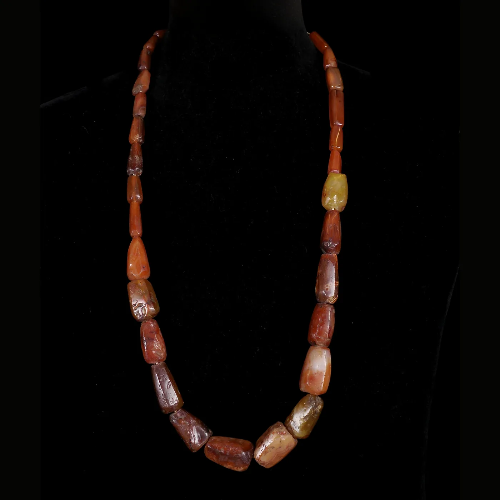
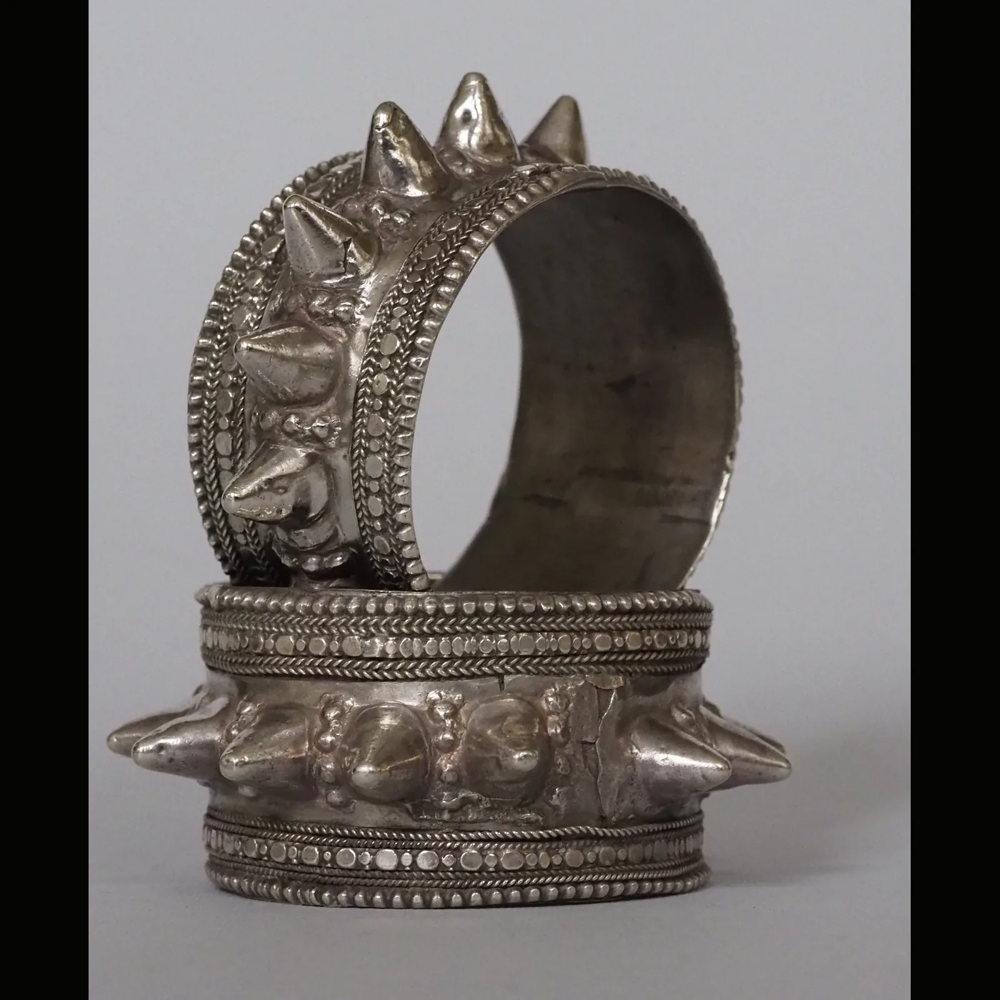
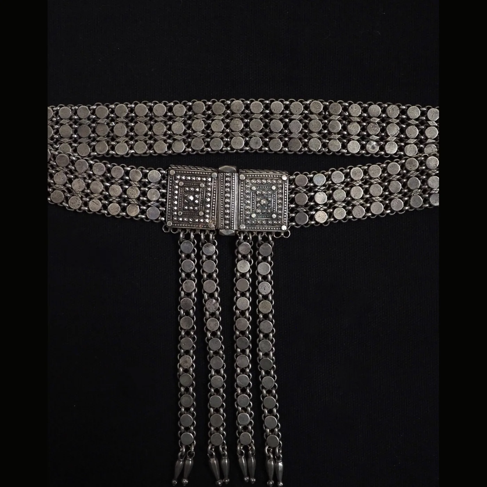
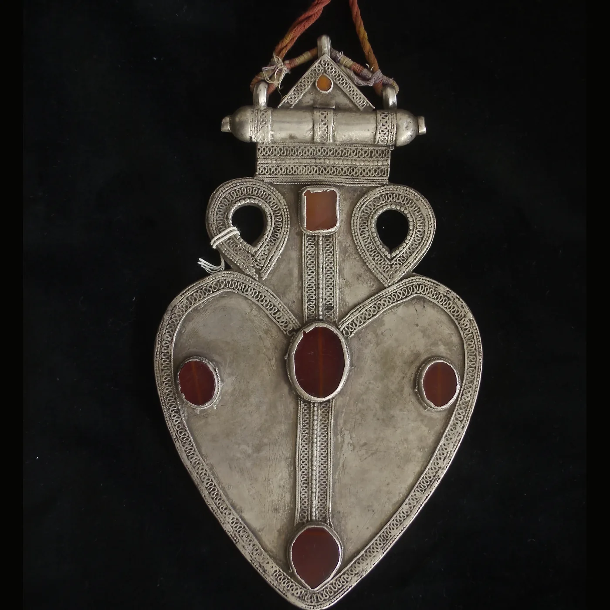
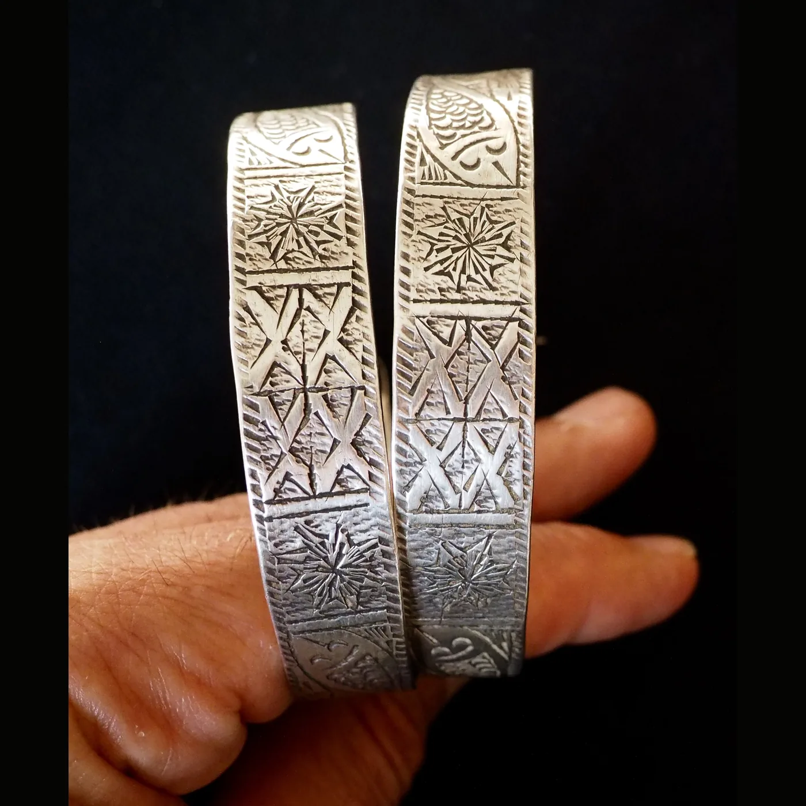
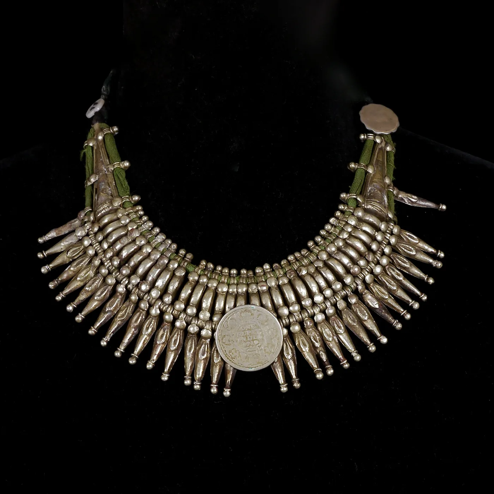
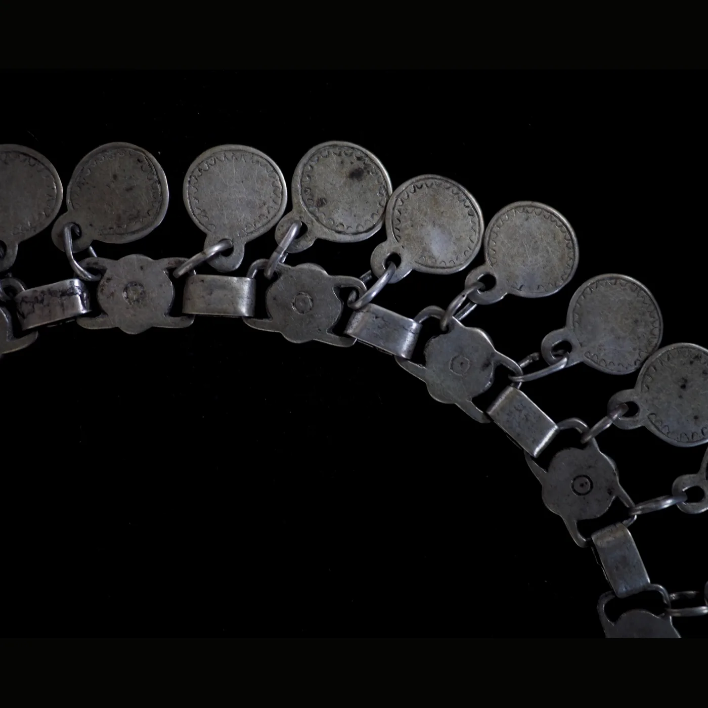
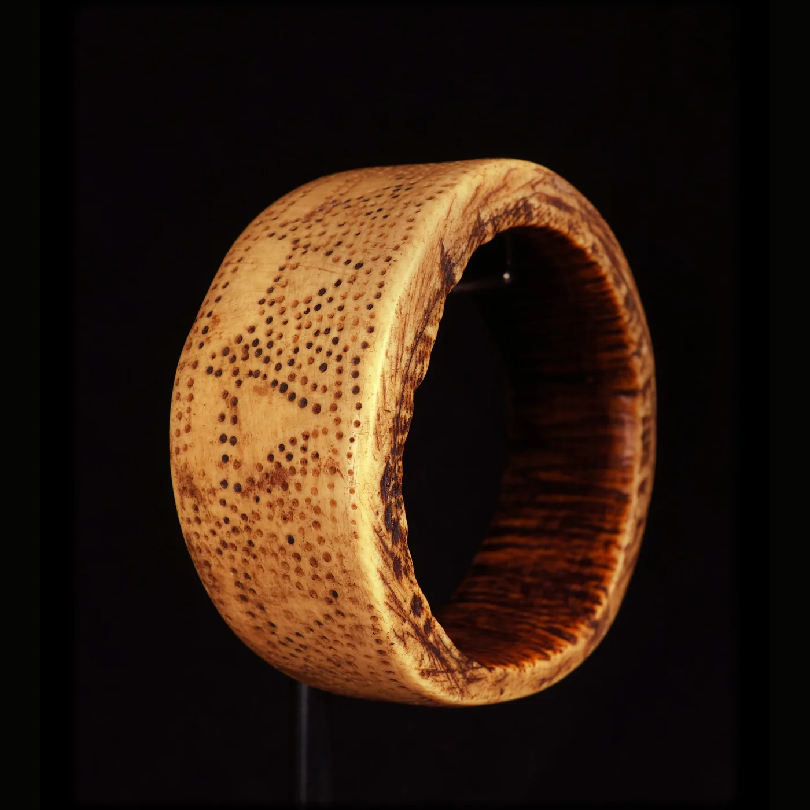
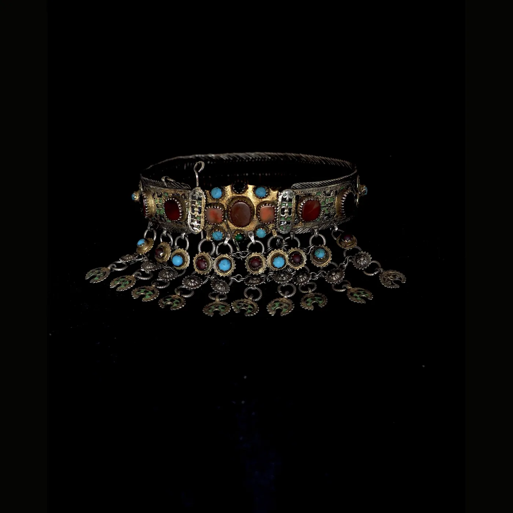
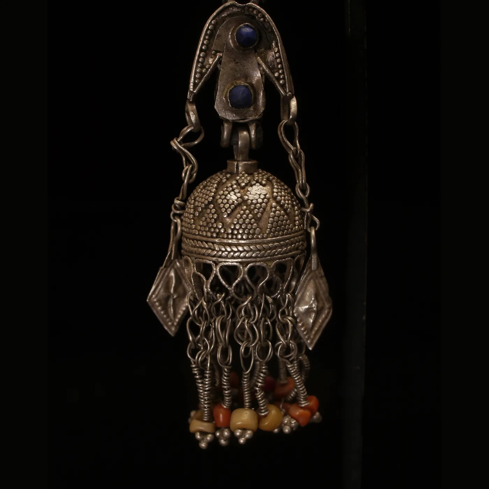

Latest Jewelry
Shop necklaces Shop pendants Shop silver

Latest Objects
Shop bracelets Shop belts Shop archive

Belts & body ornament
Shop collection

Central Asian silver
Ritual surfaces, field pieces, dorsal pendants

Temporals / earrings
Shop collection
New in archive




